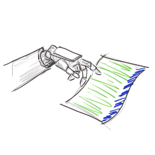

A Sample of My Work
1. Build-a-Bot Stadium (BBS)
The Problem: I wanted a flexible platform to allow quick iteration on AI/ML experiments without being tied to any particular platform, stack, learning paradigm, or environment type, while being able to keep a persistent record of my iterations.
The Approach: This was/is an ambitious project, so I tackled it in stages.
- Considered what I actually needed from the platform and how I wanted to interact with it.
- Worked with CoPilot to flesh out engineering documentation, and create a plan of attack.
- Finally began to implement the solution:
- Implemented a Go-based server backend to host environments and manage bot instances.
- Created a plugin system to allow for easy extension of the server's capabilities without modifying the codebase or recompiling.
- Designed a custom JSONL-over-TCP protocol for communication between the client and server, allowing for real-time updates and commands.
- Created a Go based agent process to simplify communication between the client and server, to make future bot development easier.
- Iterated over a few SQLite schemas to store and manage the state of the environments and bot instances.
- Developed a front end client interface using C# with Avalonia to have a light and easy interface to control and monitor the action.
The Current State: This is early in development, but eerily functional. As of March 29, 2026, the project is three weeks old, but already showing promise.
- The server is happily hosting a simple RL grid world along with an even simpler guess-the-number game and allowing multiple remote bot instances to connect and interact with them.
- The client can connect to multiple servers, send commands, and receive real-time updates on the state of the world and the bots.
- The client can host an arbitrary number of bot instances locally and maintain a persistent record of their identities across multiple servers.
- The plugin system is in place, allowing for easy extension of the server's capabilities without modifying the codebase or recompiling.
- There is a stubbed global registration system in place with a UUID-based approach for both clients and servers.
- I've taken some time to develop a bit of brand identity for the product.
- Lots more as well, but let's just look at some pictures ...
Where It Goes From Here: There's a long uphill climb ahead, but the foundation is solid and the potential is exciting. Since I've kept everything as flexible and unopinionated as possible, there's room for a lot of growth. With careful attention to design and user experience, I think this could be a really powerful tool for learning and experimentation in the AI/ML space.
Visual Walkthrough
Open Full Gallery2. Tactile Pattern Classification

The Problem: I was given noisy IMU data from a robotic finger and asked to classify tactile patterns in real time. No fancy sensor suite, no cloud safety net, just "make this work on constrained hardware."
The Approach: I built the full pipeline end to end: model design and training in Python, a custom instruction set architecture (ISA) for the hardware runtime, and scripts to generate all deployment artifacts without hand transcribing model specs or weights.
The Current State: This is still very much a living project, but the core stack works and is reproducible.
- I wrote the ISA myself along with a SystemVerilog parser/translator so one hardware implementation can execute a family of similar CNN models without reflashing for each architecture tweak.
- I built a model-spec-driven Python layer that can instantiate compatible Torch models from compact numeric descriptions, so software behavior stays aligned with hardware expectations.
- The training flow is now nearly autonomous: data prep, warm-up, compression/quantization stages, artifact export, and plotting can be run from scripts instead of manual notebook choreography.
- All hardware deployment artifacts are script-generated: instruction stream, quantized weights, and intermediate IR/metadata. No manual transcription step required.
- The small int8 deployable model is about 112k parameters and lands roughly 4% behind a much larger float32 model (~840k params, with a more advanced architecture), which I consider a solid trade for FPGA deployment constraints.
From Ambiguity to Architecture
I started with a minimalist project brief, a pile of awkward data, and a lot of uncertainty. I turned that into a working hardware/software co-design flow with a repeatable path from training to FPGA-ready artifacts.
One of the main (self-imposed) constraints was no divide or modulo operations in hardware. That forced better design decisions early and kept the architecture disciplined.
I started with a pickled dataset I couldn't even open at first and raw IMU traces I barely understood. The galleries below show the messy path from that point to something approaching deployable.
Documentation
This is a sort of journal of my thoughts as the project evolved.